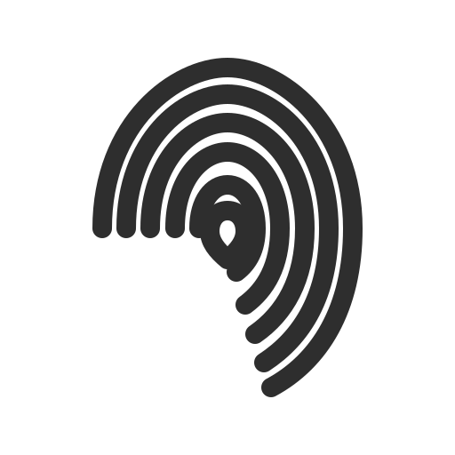

Huella Rosa
Ronda 2: exploraciones centradas en una huella dactilar inequívoca. Cada símbolo se compara a 512, 96 y 48 px.
A. Remolino de regreso · recomendada
La huella clásica conserva sus surcos y un acento Frambuesa vuelve sobre el recorrido: una paciente reconocida al regresar.
Sobre crema
Sobre frambuesa

B. Ícono de campo
La huella blanca dentro de un cuadrado Frambuesa prioriza reconocimiento inmediato en la pantalla de una tableta o teléfono.
Sobre crema
Sobre frambuesa
C. Contorno que acompaña
El surco exterior se cierra con discreción en la base; comunica continuidad sin convertirse en un lazo literal.
Sobre crema
Sobre frambuesa
Notas y recomendación · Las propuestas de la primera ronda se conservan en esta carpeta.